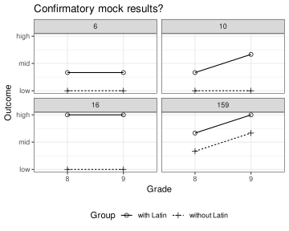

Clarifying research questions by sketching possible outcomes
research questions
research design
Author
Jan Vanhove
Published
October 10, 2025
In this blog post, I’d like to share a technique that I’ve found useful both for teaching students how to read research articles and for advising colleagues on study design. The technique is low-tech: you sketch a few possible outcomes for the study you’re reading about or designing, and you evaluate each sketch in light of the study’s predictions, research questions, and theoretical rationale.
Applying this technique before reading results and discussion sections helps you become a more independent and critical reader of research articles. Applying it when designing your own studies allows you to clarify your research questions and expectations, and to anticipate and address plausible critical comments.
Let’s apply the technique to an example.
Study design
Rummer (2015) investigated the influence of taking Latin in secondary school on the use of grammatical tenses in L1 German. His quasi-experimental study included 22 8th-graders and 22 9th-graders. Of the 22 8th-graders, seven took Latin and 15 took French or Russian as a foreign language (in addition to English). Of the 22 9th-graders, nine took Latin and 13 French or Russian. The pupils were not randomly assigned to the ‘with Latin’ or ‘without Latin’ groups; these groups already existed before Rummer designed the study. The pupils had started learning their second foreign language (Latin, Russian or French) in 7th grade.
All pupils completed a test. The details of this test needn’t concern us, but the idea is that higher test scores reflect a more sophisticated use of the L1 German tense system.
Rummer’s explicit prediction, translated from the German original on p. 255 and slightly rephrased, was
Regardless of grade, pupils in the ‘with Latin’ group will show a more sophisticated use in the L1 German tense system compared to pupils in the ‘without Latin’ group. This difference will be larger in the ninth grade than in the eighth grade.
The rationale underlying the study is that Latin classes have been said to sharpen pupils’ ‘linguistic logic’. The author, however, is skeptical of claims that Latin confers greater transferable linguistic benefits than other foreign languages.
While a few criticisms can be raised about this study, the article is a good read—especially for students who are still learning to read empirical research critically.
Step 1: Sketch mock results
The first step is to take a piece of paper and roughly sketch a few possible results. For simplicity, assume that there won’t be any statistical uncertainty about the outcomes. Also assume that you’re only interested in group means, not medians or other summaries. Don’t overthink the sketches—a couple of points and lines on a piece of paper are all you need.
The research design of our example features two times two cells (with vs without Latin, and 8th vs 9th grade), so a simple chart with two times two values suffices. These values could in principle range from 0 to 12, but you can simplify the charts even further by making only a broad distinction between, say, low, mid, and high values.
While I suggest you just draw these charts on a slip of paper, I wrote an R function called mock_up() for this blog post. Feel free to adapt it to suit your own needs.
Code
# Create mock resultsmock_up <-function(levels =3, plots =9, show_data =FALSE) {if (plots > levels^4) {warning("The number of datasets generated is lower than the requested number of plots.") plots <- levels^4 }library(ggplot2) d <-expand.grid(Latin_8 =1:levels, Latin_9 =1:levels, NoLatin_8 =1:levels, NoLatin_9 =1:levels) d$Plot <-rownames(d) |>as.numeric() d <-reshape(d,varying =c("Latin_8", "Latin_9", "NoLatin_8", "NoLatin_9"),v.names ="Outcome",timevar ="Var",times =c("Latin_8", "Latin_9", "NoLatin_8", "NoLatin_9"),direction ="long") split_names <-do.call(rbind, strsplit(d$Var, "_")) d$Group <-ifelse(split_names[,1] =="Latin", "with Latin", "without Latin") d$Grade <- split_names[,2]row.names(d) <-NULL d <- d[, c("Plot", "Group", "Grade", "Outcome")]# Breaks at minimum ("low"), average ("mid"), and maximum ("high") breaks <- (0:2) * (levels -1)/2+1if (plots !=0) { my_plot <- d |>subset(Plot %in%sample(1:levels^4, plots)) |>ggplot(aes(x = Grade, y = Outcome,linetype = Group,group = Group,shape = Group)) +geom_line(linewidth =0.5) +geom_point(size =2) +scale_shape_manual(values =c(1, 3)) +scale_y_continuous(breaks = breaks, labels =c("low", "mid", "high")) +facet_wrap(facets =vars(Plot)) +theme_bw() +theme(legend.position ="bottom") +labs(title ="Mock results")print(my_plot) }if (show_data) return(d)}
Figure 1 shows a few rough sketches of possible findings, using four levels to distinguish between the outcomes. Since there are \(\ell^4\) possible ways to assign one of \(\ell\) values to four cells in the design (here: \(\ell = 4\), so \(\ell^4 = 256\)), only a random subset of possible sketches is plotted. The numbers in the facets identify which of these \(\ell^4\) sketches are plotted. If you run the function yourself, you’ll get a different set of sketches.
Code
set.seed(2025-10-09) # comment out when running the function yourselfd <-mock_up(levels =4, plots =4, show_data =TRUE)
Figure 1: Four sketches of mock results for Rummer’s study. The numbers in the facet description (41, 70, 98, 188) identify the plotted mock results in the set of the 256 generated results.
Step 2: Compare mock results to predictions
The second step is to decide, for each of the mock results you’ve drawn, whether it matches the predictions or hypotheses. Take these predictions or hypotheses literally.
For readers, the idea of this step is to figure out which aspects of the results are relevant for evaluating the predictions and which aspects are irrelevant. This way, once you move on to the article’s results section, you know what you should pay attention to.
If you’re designing a study, the idea of this step is to figure out whether your phrased your predictions clearly and if they match what you intended to say.
Let’s try this for the mock-up results in Figure 1.
Sketch 41: The with Latin group in 8th grade doesn’t score higher than the without Latin group in 8th grade. So the predictions aren’t confirmed.
Sketch 70: The with Latin group in 9th grade doesn’t score higher than the without Latin group in 9th grade. So the predictions aren’t confirmed.
Sketches 98 and 188: The predictions aren’t confirmed for the same reasons.
This already tells us that the predictions aren’t so vague that pretty much any pattern in the results would confirm them—which is a good thing. Moreover, the predictions seem to be clear in the sense that we were able to make a decision for all four patterns.
Further, if you’re fairly novice reader of quantitative research, the sketches above may help you figure out some criteria that the results need to meet if they are to confirm the predictions:
The with Latin group should outperform the without Latin group in grade 8.
The with Latin group should outperform the without Latin group in grade 9.
To more seasoned consumers of quantitative research, this may seem obvious. (It may also seem obvious to them that one more condition needs to be satisfied. We’ll return to this shortly.) But from experience, I can tell you that it isn’t obvious for everyone—not even if the predictions are spelt out as clearly and specifically as here.
Step 3: Draw confirmatory results and come up with alternative explanations
The next step is to sketch a couple of further possible results that satisfy the necessary conditions for them to confirm the predictions. If we notice that some of the patterns drawn still wouldn’t confirm the predictions, we need to revise the list of necessary conditions. Iteratively, we refine our understanding of what exactly counts as evidence for or against the predictions.
Figure 2 shows sketches of four patterns that conform to the two necessary conditions we’ve identified.
Code
library(tidyverse)# Patterns satisfying the 2 necessary conditionsd_confirm <- d |>pivot_wider(id_cols = Plot, names_from =c(Group, Grade),values_from = Outcome) |>filter(`with Latin_8`>`without Latin_8`) |>filter(`with Latin_9`>`without Latin_9`) |>pivot_longer(cols =contains("Latin"),names_to =c("Group", "Grade"),names_pattern ="(.*)_(.*)",values_to ="Outcome")# Other patterns (refuting or perhaps ambiguous)d_refute <- d |>anti_join(d_confirm)# Plot some of the patterns confirming the predictionsplots <-4levels <-4breaks <- (0:2) * (4-1)/2+1# for nice plottingd_confirm |>filter(Plot %in%sample(unique(Plot), plots)) |>ggplot(aes(x = Grade, y = Outcome,linetype = Group,group = Group,shape = Group)) +geom_line(linewidth =0.5) +geom_point(size =2) +scale_shape_manual(values =c(1, 3)) +scale_y_continuous(breaks = breaks, labels =c("low", "mid", "high")) +facet_wrap(facets =vars(Plot)) +theme_bw() +theme(legend.position ="bottom") +labs(title ="Confirmatory mock results?")

Figure 2: Sketches of four patterns that conform to the two necessary conditions we’ve identified.
Let’s evaluate these sketches, too, in terms of the predictions:
Sketch 6: The difference between the with and the without Latin groups isn’t larger in grade 9 than in grade 8. So the predictions aren’t confirmed.
Sketch 10: This pattern conforms fully to the predictions.
Sketches 16 and 159: The patterns don’t conform to the predictions for the same reason as sketch 6 doesn’t.
This tells us that we need to add a third necessary condition to the list:
The with Latin group should outperform the without Latin group in grade 8.
The with Latin group should outperform the without Latin group in grade 9.
The difference between the with and without Latin groups is larger in grade 9 than in grade 8.
We repeat the process, ending up with the eleven sketches shown in Figure 3.
Figure 3: All eleven out of 256 sketches that conform fully to the author’s predictions.
As you can verify, all of these patterns literally conform to the author’s predictions. But some of these patterns probably don’t correspond to what the author had in mind. I suspect that the author pictured a pattern like the ones shown in sketches 78 and 95, where at least the with Latin groups show some improvement from grade 8 to grade 9. In some of the other sketches, the performance in the with Latin groups is constant whereas it declines in the without Latin groups. Such a pattern would be more consistent with Latin classes having a prophylactic effect against the decline of language logic than with their actively enhancing language logic.
If you’re designing a study, sketches that literally conform the predictions but look unlike what you expect may prompt you to rephrase your predictions. If you’re reading a quantitative research article, such sketches can help you appreciate that the author’s formal predictions don’t fully capture what are likely their actual expectations.
Moreover, having drawn patterns that would confirm the author’s predictions, we can try to think of plausible alternative explanations for them. As far as I’m concerned, all eleven patterns in Figure 3 could possibly be explained by selection bias: The pupils weren’t randomly assigned to the language groups, and it’s entirely plausible that pupils choosing or being encouraged to take Latin tend to be the ones with a knack for language logic. This would show up as a better outcome for the with Latin group than for the without Latin group in grade 8, and an even greater difference in grade 9.
Another plausible alternative explanation for some of the sketches involves floor effects. In sketches 10, 14, 15 and 78, the without Latin group performs near the bottom of the scale. This leaves open the possibility that the difference between the with and the without Latin groups in grade 8 in terms of the sophistication of their use of L1 tenses is larger than the test scores suggests. As a result, it’s possible that the true gap in the sophistication of L1 tense use between the with and without Latin groups is equally as large in grade 9 as it is in grade 8, and that both groups show a parallel development. Likewise, ceiling effects in with Latin group in grade 8 (sketches 32, 44, 48, 112) may mask such a parallel development.
I don’t want to exhaustively list plausible alternative explanations for these patterns. If you’re a reader, the goal of this part of the exercise is to prepare yourself mentally that a pattern that conforms to the author’s predictions may be compatible with an explanation other than the one put forward by the author. If you’re the one designing the study, this may help you identify weaknesses in your design that you can hopefully still fix.
Step 4: Draw disconfirmatory and ambiguous results and try to spin them
Steps 2 and 3 allowed us to identify the patterns that would confirm the author’s predictions and to anticipate alternative explanations for them. In step 4, the goal is to take a closer look at results that would not confirm the predictions and to consider whether, and how, such results might still be interpreted in line with the broader idea underpinning the study.
Consider Figure 4. None of the patterns sketched literally conforms to the author’s predictions. But how difficult would it be to spin these patterns in such a way that they are still consistent with the broader idea that Latin classes are more beneficial to language logic than French or Russian classes?
Figure 4: A few of the sketches that do not match with the author’s predictions.
The pattern in sketch 6 could easily be spun in these terms: The children had already taken Latin, French or Russian in grade 7, and the boost in language logic already happened before the start of this study.
Sketch 86 could also be explained away as a result of poor timing: Latin classes are more conducive to language logic, just not in the short term. Perhaps the structures targeted in this study aren’t even taught until grade 9? An alternative explanation for these results would be that the test used in this study just isn’t up to scratch.
Sketch 107 isn’t compatible with the author’s predictions, either. But such results could suggest that taking Latin protects against a decline in language logic—or that taking French or Russian expediates such a decline.
Sketch 139 might suggest that taking Latin hastens the development of language logic, even though admittedly this relative benefit isn’t long-lasting. But precocious levels of development of language logic may perhaps confer advantages in other respects that aren’t captured in this study?
Sketch 144 might also suggest that taking Latin hastens the development of language logic. This relative benefit seems to be more long-lasting. Moreover, the ceiling effect for the with Latin group may mask a continued development in language loss beyond grade 8.
Finally, sketch 158 could suggest that the benefit of taking Latin isn’t evident in grade 8 but that it does become visible by grade 9.
Step 4 may reveal that the author’s predictions were overly restrictive. For instance, the results in sketch 158 arguably represent stronger evidence for the claim that taking Latin boosts language logic than some of the results in Figure 3: the pattern in sketch 158 renders less plausible the explanation that pupils taking Latin already were stronger in language logic before they even took Latin.
If, as the researcher planning the study, you notice that your predictions, taken literally, are too restrictive, you may want to revise them. Again, the idea is to iterate through these steps until you’re confident that what you wrote is what you mean.
Like step 3, step 4 highlights the role of auxiliary assumptions in deriving predictions from theories—or from vaguer notions such as ‘Latin boosts language logic’. In this particular example, some key assumptions appear to be
that this beneficial effect is already noticeable in grade 8 (cf. patterns 86, 107 and 158);
that this beneficial effect is cumulative (cf. patterns 6 and 139);
and that the test used could show such a cumulative beneficial effect (cf. patterns 86 and 144).
As a reader, such insights may help you better appreciate the distinction between the specific predictions and the broader theoretical ideas that motivate them. They also make you more aware of how easily results can be interpreted—or spun—to fit a preferred narrative.
As a researcher planning a study, they hopefully encourage you to make explicit how you derived your predictions from the theoretical framework and to revise these predictions if needed. Further, they may prompt you to adjust your design to address potential criticisms (e.g., by including 7th- and 10-th graders) or to build in some checks of key assumptions.
Conclusion
Sketching possible results and then trying to interpret them is a simple enough exercise. But it forces you to understand or specify exactly what patterns would support the predictions, and what patterns would refute them. Further, it helps you to identify the often tacit auxiliary assumptions that the predictions are based on. For readers, it encourages critical engagement with research articles as opposed to merely taking the author’s interpretations at face value. For researchers, it sharpens research questions and predictions, and, by forcing them to anticipate alternative explanations, it may help them strengthen the study’s design.